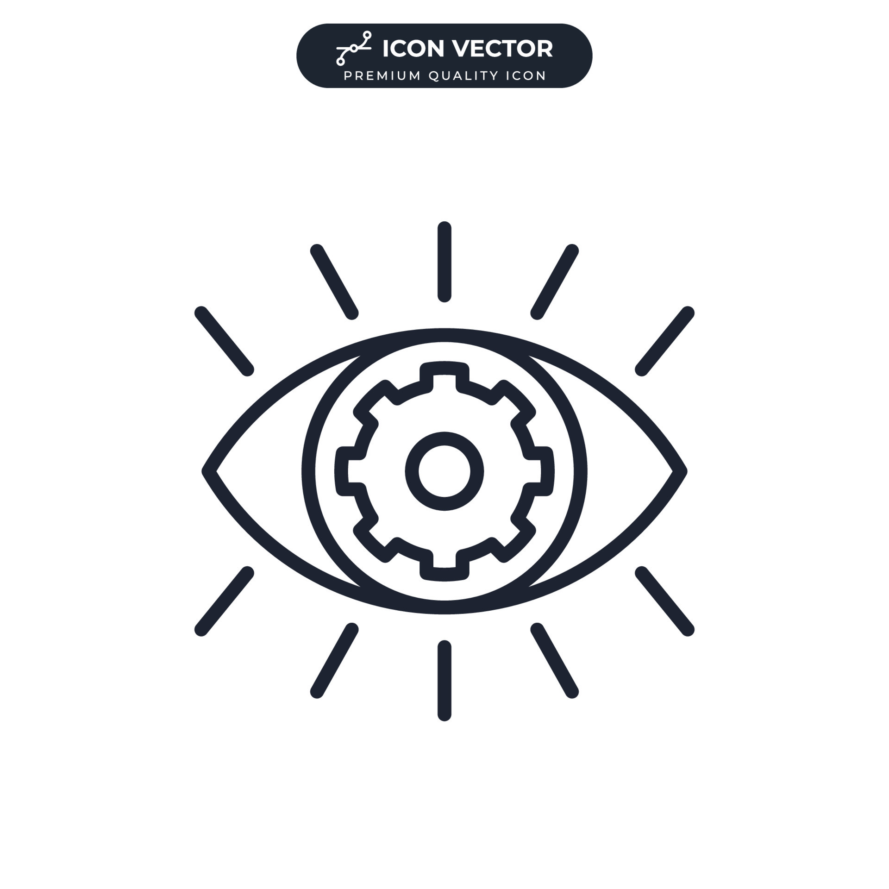

Gordon College

Vision
By 2025, the College envisions to be a premier local institution of higher learning in Region 3 committed to the holistic development of the human person and society.

Mission
To produce well-trained, skilled, dynamic, and competitive individuals imbued with values and attitudes responsive to the changing needs of the localnational and global communities

Core Values
- Character
- Excellence
- Service

Goals
Gordon College shall
- Provide opportunities that will enable individuals to acquire a high level of professional, technical and vocational courses of studies
- Develop innovative programs, projects, and models of practice by undertaking functional and relevant research studies
- Promote community development through relevant extension programs
- Provide opportunities for employability and entrepreneurship of graduates

Objectives
- To provide degree programs which are needed by the local, national and global communities within the standards set by Commission on Higher Education (CHED)To continuously evaluate educational programs to ensure high standard, quality and relevance in delivery of the intended outcomes;
- To develop research in different disciplines to improve existing knowledge and practices; To provide extension programs to sustain the greater impact of the college to the community,
- To integrate moral principles/ standards in the curriculum to strengthen the moral responsibilities of the lifelong learners; To strengthen the institution-industry collaboration/partnership to ensure graduates' employability and entrepreneurship:
- To increase the national passing percentage for board courses and national qualification